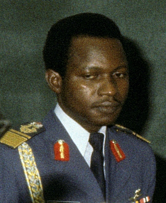

John Nmadu Yisa Doko
-
Air Vice-Marshal John Nmadu Yisa-Doko (born
1942- 2014), GCON, CFR was the first Nigerian
Air Force 's Chief of the Air Staff from 1975 to
1980 who joined as a NAF cadet.
-
He was amongst the first batch of pilots
recruited to serve in the newly formed Nigerian
Air Force, and was sent to Ethiopia for training
as a pilot. He was given command over the first
air platoon formed, when the German technical
assistance team concluded their mission to form
the Nigerian Air Force.tors.
-
Air Vice Marshal John Yisa-Doko was signalled
and maturation to the NAF. Not only the first
officer of NAF origin to become Chief of the Air
Staff , but also first to reach the rank of Air Vice
Marshal , In Nigeria,
-
He played an active part during the Nigerian
Civil War as Officer Commanding NAF flying
wing and senior officer in charge of operations.
-
Air Vice Marshal Yisa-Doko started his
education at St. Peter's School, Doko in 1947
1951 where he completed his primary school in
1955. After his primary school, he moved to
Government College, Kaduna for his secondary
education, graduating in 1961. He then moved
on to the Federal Emergency Science School,Lagos in 1962.
-
Military career
He enrolled into the NAF as a cadet in 1962
and was one of the pioneer officer cadets sent
to the Imperial Ethiopian Air Force for pilot
training between 1962 and 1964. On return
Second Lieutenant in 1964.